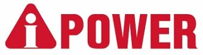

MITEX 2026 · Россия · Стенд 8D201
A-iPower
Карточка проверена 10 ноября 2026, 09:28 · Источник ↗ · Снимок оригинальной карточки ↗
О компании
Компания A-iPower вышла на российский рынок в сентябре 2019 года и, с этого момента держит марку своего бренда на самом высоком уровне. Всего опыт производства компании в создании технических решений для инженерной сферы составляет более 30 лет. Собственное производство позволяет нам не только регулярно расширять линейки продукции, но и постоянно усовершенствовать технологии, используемые в нашем оборудовании. A-iPower производит различные виды техники высокого качества - портативные генераторы, компрессоры, мойки высокого давления, сварочные аппараты, бензиновые двигатели, садовую технику - всё это небольшая часть оборудования из обширного списка наших товаров для комфортной работы и уютной загородной жизни.
Контакты
Все контактные сведения из карточки
Контакты Юридический адрес Телефон: +7 (495) 181-62-69 E-mail: info@a-ipower.ru Адрес: 117534, Россия, Москва, вн.тер.г. муниципальный округ Чертаново Южное, Варшавское ш., д. 150, к. 2 Веб-сайт: https://www.a-ipower.ru E-mail: info@a-ipower.ru Телефон: +7 (495) 181-62-69
Все рубрики участника
Mitex - Рубрикатор
- 2. Садовая техника, инструмент, инвентарь, оборудование, расходные материалы и насосы
- 9. Компрессоры, генераторы, силовая техника
Зал
- Зал № 8
Участник выставки
- MITEX
Видео, каталоги и документы
В доступной карточке нет видео или документов. Смотрите сайт участника.